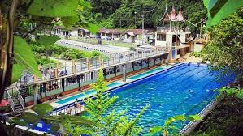
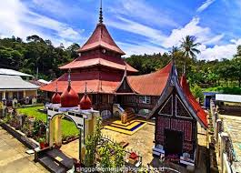
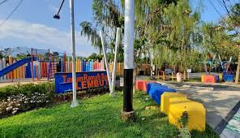

Pesona Padang Panjang
Padang Panjang adalah kota yang terletak di provinsi Sumatera Barat, Indonesia. Dikenal sebagai "Kota Serambi Mekah", Padang Panjang menawarkan keindahan alam yang menakjubkan, kekayaan budaya, dan objek wisata yang menarik.
Destinasi Wisata Populer
Mifan Lake
Danau buatan yang indah dengan pemandangan gunung yang menakjubkan.
Lubuk Mata Kucing
Air terjun alami yang menyegarkan dan cocok untuk berenang.
Masjid Asasi
Masjid bersejarah dengan arsitektur yang menawan.
taman pensil
taman yang indah dan cocok untuk bersantai
Tentang Padang Panjang
Terletak di ketinggian dan dikelilingi oleh pegunungan yang indah, Padang Panjang menawarkan suasana yang sejuk dan menyegarkan. Kota ini juga dikenal dengan banyaknya lembaga pendidikan Islam, menjadikannya pusat pembelajaran agama di Sumatera Barat.
Hubungi Kami
Untuk informasi lebih lanjut tentang pariwisata di Padang Panjang, silakan hubungi:
Dinas Pariwisata Kota Padang Panjang
Email: pariwisata@padangpanjang.go.id
Telepon: +62 xxx xxxx xxxx